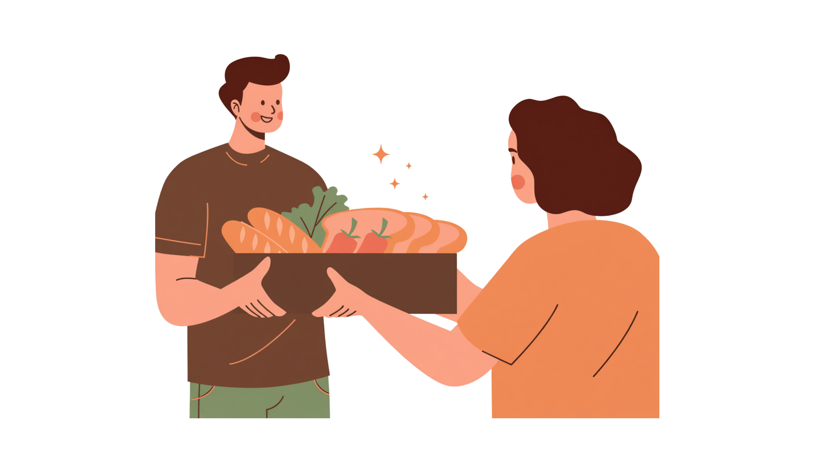
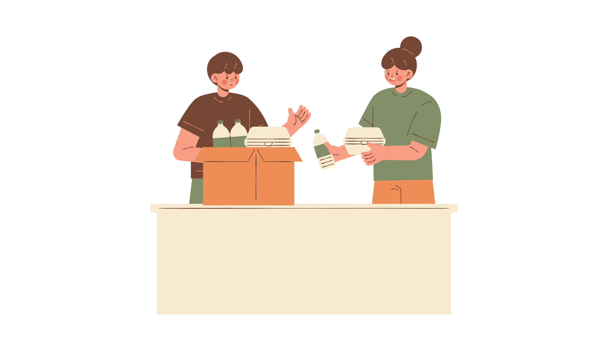

Food Bridge redirects excess food to people who need it most, reducing waste and strengthening communities
Food Bridge transforms excess food into opportunity by connecting surplus food with communities in need. We work with businesses, restaurants, grocery stores, and community partners to recover quality food that might otherwise go to waste and ensure it reaches people who can benefit from it.
By reducing food waste and increasing access to nutritious meals, Food Bridge helps address food insecurity while promoting environmental sustainability. Through collaboration, innovation, and community engagement, we are building a more connected, equitable, and sustainable food system—one meal at a time.
Together, we're turning food surplus into community impact.
Three simple steps to turn surplus into sustenance.
Businesses, organizations, and food recovery groups join the facebook group to connect around surplus food sharing
Businesses post available surplus food. Food Pantries and recovery organizations browse listings and claim donations.
Once a claim is made, the donor and organization connect directly to arrange pickup details.
Pantry volunteers pick up fresh food and distribute it to families in need — same day, zero waste.


No. Food Bridge is completely free for both food businesses and food pantries. We are a volunteer-driven initiative.
Baked goods, produce, prepared meal, shelf-stable foods, refrigerated items, frozen foods, etc. All donations must be safe for consumption.
Pantry volunteers coordinate directly with the donating business to pick up items at the agreed-upon time window.
Yes. The Federal Bill Emerson Good Samaritan Food Donation Act protects food donors from civil and criminal liability when donating in good faith.
Simply coordinate with the pickup party via facebook.
Have questions or want to get involved? We'd love to hear from you.